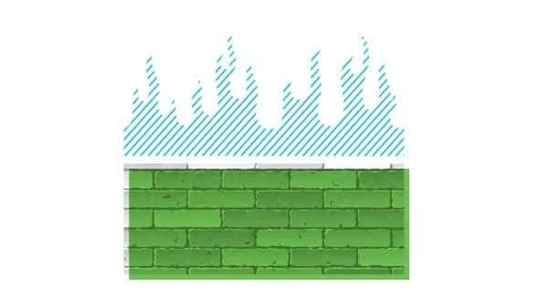
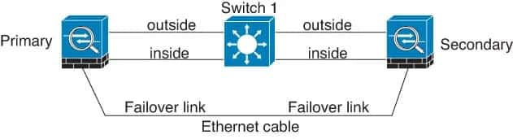
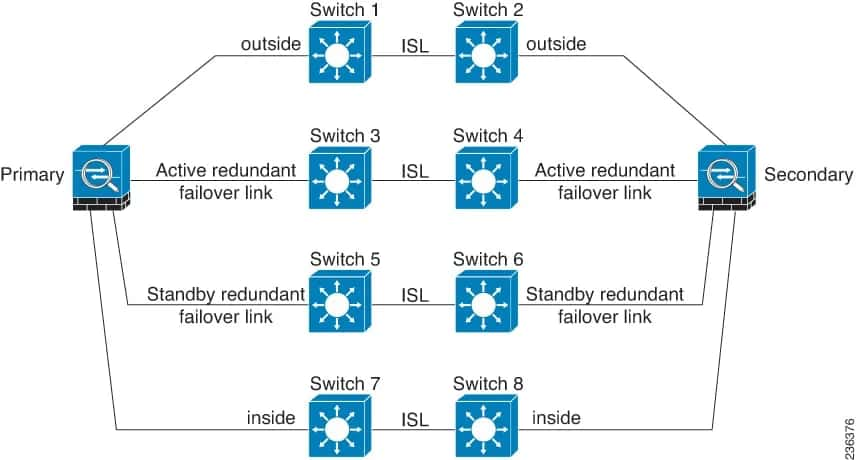

请访问原文链接：Cisco Firepower FTD HA 配置文档 查看最新版。原创作品，转载请保留出处。
作者主页：sysin.org
防火墙 HA 配置系列文章：
- Cisco Firepower FTD HA 配置文档
- FortiGate FGCP HA 配置文档
- Palo Alto PAN-OS Active/Passive HA 配置文档
- Juniper SRX JSRP 配置文档

0. 名词解释
FTD 和 FTDv：
- Cisco Firepower Threat Defense 简称 Cisco FTD
- Cisco Firepower Threat Defense Virtual 简称 Cisco FTDv
FirePOWER 与 Firepower：
- FirePOWER 表示 Cisco 收购的以前的 Sourcefire 产品，比如 ASA-5500-X 上 的 FirePOWER 服务。
- Firepower 是指收购后发布的的硬件和软件，包括 Firepower 硬件设备和 Firepower Threat Defense（FTD）软件。
- Firepower 硬件运行 FXOS（Firepower eXtensible Operating System）和 FTD 软件。
FDM、FTD CLI 和 FMC：
- FDM：Firepower Device Management，Firepower 内置 Web 界面管理工具。在 4100 和 9300 系列硬件上 Web 界面叫做 Firepower Chassis Manager。
- FTD CLI：Firepower Threat Defense Command Line，系统内置的命令行，也就是 shell。
- FMC：Firepower Management Center，防火墙管理中心，集中管理工具，Web 界面，可以是物理设备或者虚机。
Firepower 系统基于 Linux kernel。
1 | Cisco Fire Linux OS v6.7.0 (build 62) |
1. Firepower 高可用性和扩展简介
高可用性（故障转移）
配置高可用性（也称为故障转移）需要两个相同的 Firepower 威胁防御设备通过专用的故障转移链路以及状态链路相互连接。Firepower 威胁防御支持主动/备用故障转移，其中一个单元是活动单元并通过流量。备用单元不会主动传递流量，但会同步活动单元的配置和其他状态信息。发生故障转移时，活动单元将故障转移到备用单元，然后备用单元变为活动状态。
群集
Firepower 群集，可以将多个设备组成一个逻辑单元，接口通过 EtherChannels (或者称为 port channels) 实现扩展。群集仅适用于 Firepower 4100/9300 Chassis，详见官方文档。
本文描述 High Availability 配置过程，细节可以参看以下官方文档（英文）。
High Availability for Firepower Threat Defense
Configure FTD High Availability on Firepower Appliances
2. 创建 HA 的条件
总结：相同的硬件型号和软件配置（软件版本和许可相同，不支持有 DHCP 和 PPPoE 的接口配置），不同的主机名
- Are the same model.
- Same version (this applies to FXOS and to FTD - (major (first number), minor (second number), and maintenance (third number) must be equal))
- Have the same number and type of interfaces.
- Are in the same domain and group (sysin).
- Have normal health status and are running the same software.
- Are either in routed or transparent mode.
- Have the same NTP configuration. See Configure NTP Time Synchronization for Threat Defense.
- Are fully deployed with no uncommitted changes.
- Do not have DHCP or PPPoE configured in any of their interfaces.
- Different hostname (Fully Qualified Domain Name (FQDN)) for both chassis.
3. 网线连接
指定一个接口作为 Failover Link，可选指定一个接口作为 Stateful Failover Link（可以共用 Failover Link 接口），两台相同接口网线直连。
提示：应该使用相同的接口号 (sysin)，比如两台设备都使用 GigabitEthernet0/6 作为 Failover Link。
下面两张图片分别展示了推荐的最简单和最复杂的线路连接方式（详见）
Connecting with a Cable

Connecting with Inter-switch Links

4. 配置过程
通过 FDM 配置：
确保两个接口主机名不同
Device > System Setting > Hostname
指定 HA 接口
本例分别使用 GigabitEthernet0/6 和 GigabitEthernet0/7
分别在两个节点启用接口（Device > Interfaces）
启用 HA
- 主节点：
Deivce > High Availability，CONFIGURATION
选择 Primary Device
选择 Failover Link 接口为 GigabitEthernet0/6
IPv4 Primary IP: 192.168.10.1，Secondary IP: 192.168.10.2，Netmask: 255.255.255.0 (IP 仅用于节点间通信，与物理环境 IP 不冲突即可)
选择 Stateful Failover Link 接口为 GigabitEthernet0/7
IPv4 Primary IP: 192.168.11.1，Secondary IP: 192.168.11.2，Netmask: 255.255.255.0 (IP 仅用于节点间通信，与物理环境 IP 不冲突即可)
IPSec Encryption Key (可选配置) ，这里是新设备尚未配置，忽略
点击 ”Activate HA“，提示配置已经复制到剪贴板
1 | FAILOVER LINK CONFIGURATION |
- 备节点
Deivce > High Availability，CONFIGURATION
选择 Secondary Device，点击 ”PASTE FROM CLIPBOARD“，粘贴上述配置，将自动选择接口和填充 IP，点击”Activate HA“
配置完成后，High Availability 页面出现设备状态：
Primary Device.
Current Device Mode: Active Peer: Syncing
Secondary Device.
Current Device Mode: Standby Peer: Active
此时在 Secondary Device 上操作，会退出登录，出现 Server busy 画面，稍后重新登录，提示如下：
1 | This device is part of a high availability (HA) pair and is currently in standby state. With few exceptions, you cannot edit the configuration for this device. |
5. 查看 HA 状态
- FDM
Devices > Device Management
- FTD CLI
1 | show high-availability config |
1 | show failover state |
1 | 主设备 |
1 | 备设备 |
6. 切换 Failover
- FDM
Device > High Availability，点击右侧的齿轮图标，Switch Mode
- FTD CLI
1 | failover |
切换主备
1 | failover reset |
7. 下载相关产品
请访问：Cisco 产品下载链接汇总

文章用于推荐和分享优秀的软件产品及其相关技术，所有软件默认提供官方原版（免费版或试用版），免费分享。对于部分产品笔者加入了自己的理解和分析，方便学习和研究使用。任何内容若侵犯了您的版权，请联系作者删除。如果您喜欢这篇文章或者觉得它对您有所帮助，或者发现有不当之处，欢迎您发表评论，也欢迎您分享这个网站，或者赞赏一下作者，谢谢！
 支付宝赞赏
支付宝赞赏  微信赞赏
微信赞赏赞赏一下
敬请注册！点击 “登录” - “用户注册”（已知不支持 21.cn/189.cn 邮箱）。 请勿使用联合登录（已关闭）。